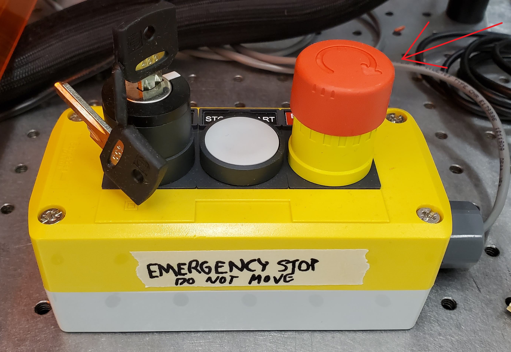

| 1. If non-urgent, use the software. During a print, the "cut part" button becomes a "STOP" button, and the mouse is trapped on the button. Pressing the space bar or left clicking will stop the print. |
|
| 2. If urgent, press the emergency stop button on the panel placed to the right of the printer. This will reset the zero position of the gantry and should only be used in emergencies. |
 |
| 3. If closer to the back of the printer, the gantry can be fully powered off using the switch at the back of the printer. This may damage the device and should only be used in emergencies. |
 |